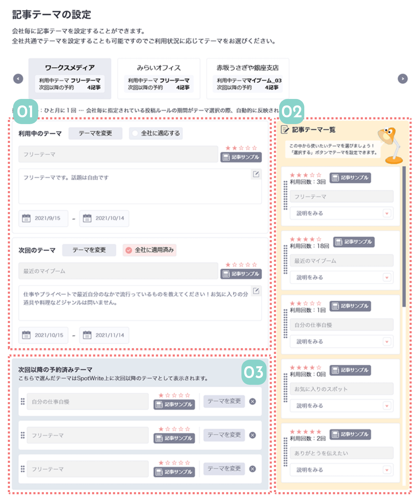

メンバーに投稿してもらう記事テーマを決めます。
簡単なテーマから少し難易度の高いテーマまで様々なフォーマットを用意してます。先の予定も事前に登録出来ますので、計画的に設定してみて下さい！

01
投稿記事のテーマを決められます
メンバーが投稿する記事のテーマを決定します。
右にある{02}のテーマ一覧の中から、現在のテーマと次回のテーマの二つを設定することができます。
設定しないと、フリーテーマがデフォルトで適用されます。
02
選べるテーマの一覧です
こちらの一覧から記事テーマを選べます。
星の数は書く内容の難易度をあらわしているので、Spotwriteの利用度によって難易度を上げていくことをお勧めします。
特にテーマを設けない場合は、デフォルトの「フリーテーマ」を利用して下さい。
03
未来のテーマを設定できます
計画的に設定するため、次回以降のテーマも3回分ここで事前に予約しておくことができます。
 関連機能
関連機能

会社ごとに絞り込みができます。
記事のサンプル文を表示できます。
テーマの説明が表示されます。